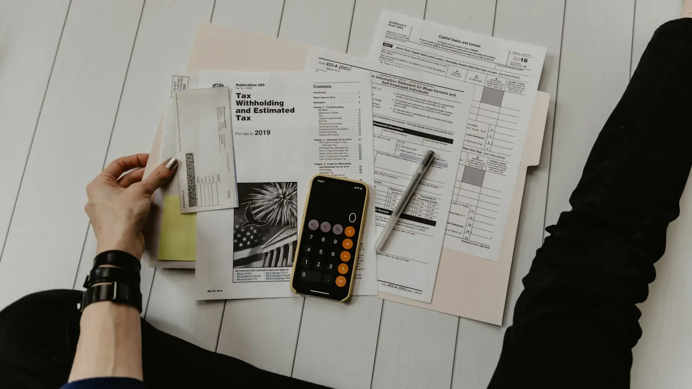
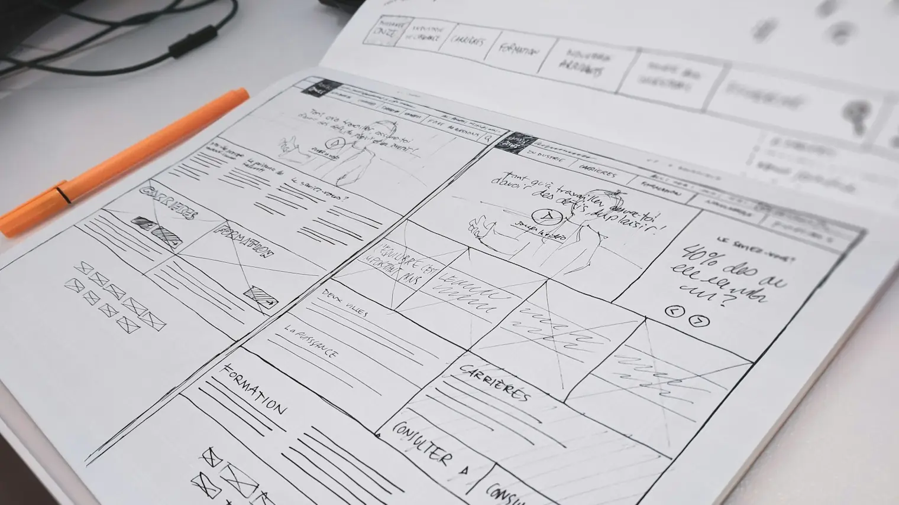

Your expertise is worth more in the age of AI, not less
What experts in their field have that AI doesn’t, and how to find the process in your work that’s worth turning into software.
Read
How much does it cost to build an app in the UK?
Real UK prices to get an app, web app or SaaS made, with three example projects, what pushes the cost up or down, and running costs after launch.
Read
Building software for a share of the business: how it works
How equity partnerships with a software studio work, an example of how one is set up, how the share is agreed, and questions to ask first.
Read
What should go in the first version of your software?
How to choose what goes into the first version of your product: one person, one job, done well, with two worked examples.
Read
How to hire a software developer for your idea (with a one-page brief)
Got an idea for an app or software? How to brief and hire a developer: what to include, what to leave out, a template to copy and questions to ask.
Read
How to validate an app idea before you build it
How to know if your app or software idea is good before spending on development: ten conversations, small commitments and doing it by hand.
ReadTurn your spreadsheet into an app: when it’s worth it
Thinking of turning your Excel or Google spreadsheet into an app? The signs you’ve outgrown it, what to try first, and when custom software is worth it.
ReadCan AI build my app? When you still need a developer
Can ChatGPT or an AI app builder make your app? What AI builders do well, where they struggle, and a simple way to decide if you need a developer.
Read
I have an idea for an app: what do I do next?
The steps that turn an app idea into something real, in the right order: the problem, what exists, ten conversations, a first version and how to build it.
ReadHow to protect an app idea in the UK
What UK law protects (trade marks, copyright, confidentiality), what it doesn’t, whether to ask for an NDA, and what to check in a developer’s contract.
ReadHow to make money from an app idea
The realistic ways apps and software make money (subscriptions, free-to-paid, per use, licensing), how to choose, and why selling just the idea rarely works.
Read
Blog
Ideas for experts with a problem worth solving.
Plain-English articles on turning what you know into software: what it costs, what to build first, and how to work with a studio.